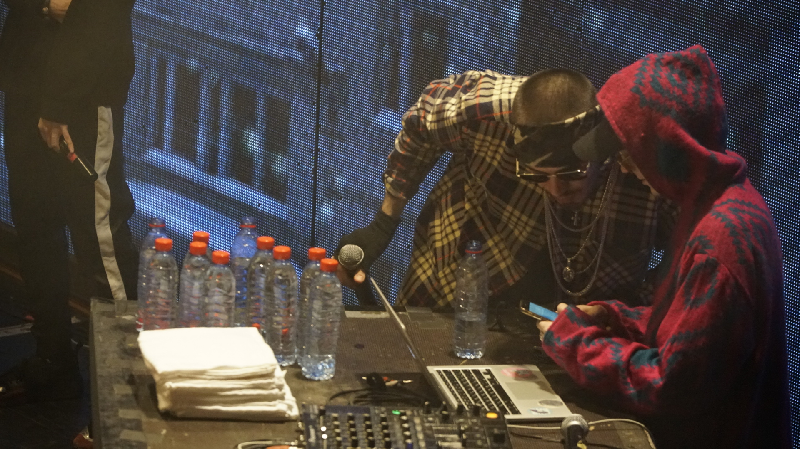
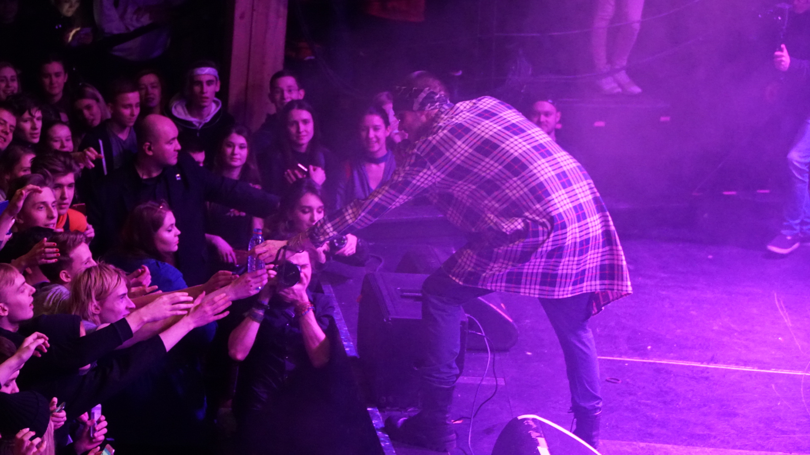

Mnogoznaal - биография
Mnogoznaal (Настоящие имя и фамилия - Максим Лазин) — молодой исполнитель и битмейкер. Родился 15 июля 1993 года (Возраст, сейчас лет: 24) в городе Печора, который находится в Республике Коми, на данный момент проживает в Ухте, один из самых ярких участников творческих объединений «Dead Dynasty» и «YUNGRUSSIA». Также является одним из основателей объединения LITALIMA (Творческое объединение, основателями которого являются Mnogoznaal и Tilmil. Проект прекратил свое существование 7 февраля 2017 года).
На фоне парней из своего объединения Многознал выделяется более глубокими текстами и очень спокойным флоу. Его песни навевают раздумья, погружают в некий транс. Атмосфера его треков неповторима, и это не пустые слова, ведь, спокойная, будто убаюкивающая подача и качественное звучание уносят слушателя в мир внутренних переживаний и философских рассуждений.
.

Джефри
Я же говорил им, там совсем иной мир.
Зачем они по три приняли?
Всем этим ребятам я говорил прежде:
Все мы тут потребители!
Ты дал им поглядеть их разум наизнанку
Будто они навоз не видели.
Их глупые начальники в душных кабинетах
Теперь для них не повелители.
На твой настрой будешь видеть их ухмылку,
Затем большие пальцы вниз там.
Им кажется, что ваша типа "толерантность" -
Детище паршивых пацифистов.
Страна я подумал твои крепости падут,
Раз уже никто не хочет двигаться тебе попутно.
Как твой же трамвай, где всего один кондуктор -
Кому доброе утро, в тебе на все кладут хуй!
Давай, кретин! Потакай Большому брату;
Он польщён и рад вам - мокрощёлкам, наркам.
Однополым бракам, ещё один на счёт накапал.
Сука ликует днями напролёт о том, как расчетлив падла.
Ты же не мог безнаказанно в этих мышеловка сыр брать.
Теперь, сука, будешь наблюдать водопад зелёных цифр.
Ты думал он учил вас дышать; ты думал, что он вам дал выбор?
Спокойно, тот кого здесь зовут Морфеус давно простой барыга.
Я надеюсь, что ты знал, но под твоей кроватью монстр;
Под твоей кроватью монстр.
Прости, что разбудил, но под твоей кроватью монстр;
Под твоей кроватью монстр.

Дополнительная информация:
|